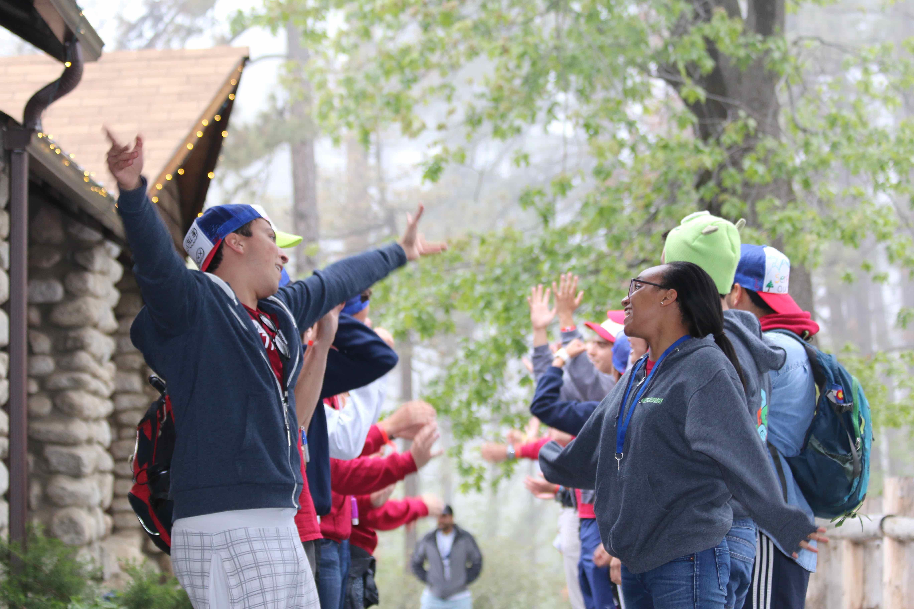
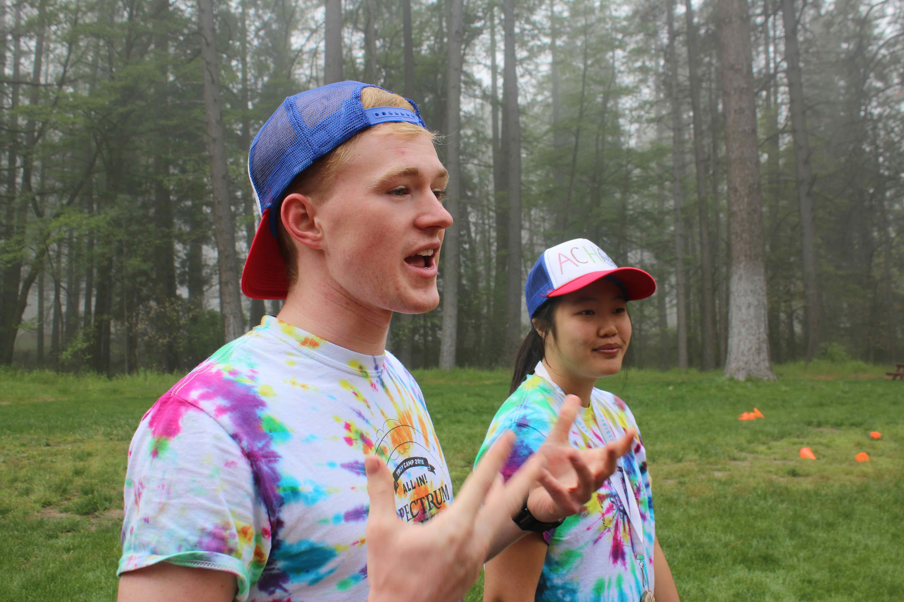
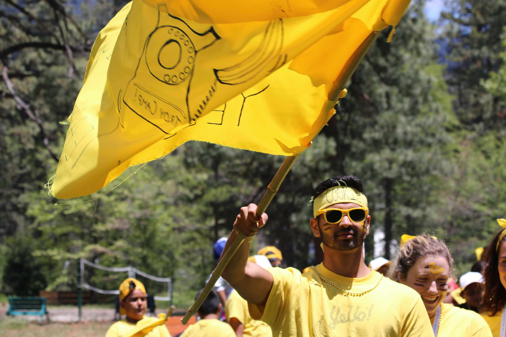

Troy Camp creates second family for kids
Service organization provides valuable mentoring to local elementary, secondary students.
By Erika Lee, Lifestyle Editor
Plastered on the wall of Healy Hut, a small hut in one of the giant cabins at the Idyllwild Pines conference center, is a butcher-paper poster covered in quotes. At the top of the wall is a title: “Kids say the darnedest things.” The wall documents all of the ridiculous things kids say each year on the camping trip that Troy Camp provides for free for local elementary school students.
Every year, the organization takes 200 third, fourth and fifth graders from Los Angeles Unified School District schools to a camp in the San Bernardino mountains. The week creates mentoring relationships between these students while providing them with new experiences such as hiking and horseback riding. The week is one of the many ways that the Troy Camp organization creates a massive impact on the growth and development of local children.
USC is home to hundreds of service organizations aimed to mentor and better the lives of the surrounding community — Troy Camp is one of these organizations. Focusing on the development of local children, the members of Troy Camp aim to provide a common ground between the University and its neighbors through a commitment to service and friendship.
Troy Camp, one of USC’s largest philanthropy organizations, yields an impact that extends beyond just elementary, middle and high school programs in the community. The organization utilizes a one-on-one approach that aims to enrich the lives of each individual member personally, establishing bonds that don’t just last for the length of a school year, but for life. Through mentorship programs, after-school workshops and camping trips, Troy Camp is dedicated to creating a community between local students and USC students.
A personal approach
The organization fulfills their motto of being committed to friendship through their outreach and interactions with the youth of Los Angeles. The program is divided into three parts: Yearlong Programming, Leaders in Training and TC Leads. Although each branch of the program is different in its programming, all three retain the same goals of leading and inspiring.
“Beyond just tutoring and mentoring our kids, each camp counselor strives to be a positive influence, as not just someone they see once or a couple times a week, but as a role model and figure in their life,” said Olivia Chui, a Troy Camp counselor. “Every single day, there’s been opportunities to share and make the kids smile.”
The first program, Yearlong Programming, is an elementary school program catered toward the students who previously attended the summer camp in San Bernardino. Each month, the campers and their counselors meet up to go on trips to places such as Disneyland, the Los Angeles Zoo and the museums in Exposition Park. There are also special events for cooking holiday meals together and competing in an annual Olympics between different teams of campers. These activities — just like the summer camp — are free for all of the former campers.
Leaders in Training, the second program, aims at an older demographic of students. The program meets with middle school students every other week and leads them in leadership activities, group discussions and community service activities. The main focus of the program is to prepare middle school students for the transition into high school, and to create a solid base of study habits and leadership skills for students who might not have access to reliable mentors.
The middle school program leads into TC Leads, Troy Camp’s high school program. This after-school program is designed to continue building leadership skills while supporting students on their path to college. Each week, counselors work individually with students to help them through managing a high-school-level course load and applying to colleges. A main part of this mentoring process aims to help students find their passion and take the necessary steps to pursue it.
Every other week, TC Leads holds workshops to cover topics that range from college applications and interview skills to gender issues and social media. These workshops are meant to fill the gaps of topics that school curriculums often leave out and allow students to broaden their skill set and understand their own lives better.
All of these programs are completely free for the students involved, and each of them hold the same goal — to develop a mentoring community between USC students and local students in order to inspire local children to pursue higher education. This goal has been developed for decades by the organization, which is one of the oldest on campus.
Focused on support
Troy Camp started in 1948 when Otis Healy decided to sponsor a trip for several underprivileged local kids from the South Los Angeles area to camp in Jenks Lake. Since that year, Troy Camp has taken hundreds of local Los Angeles children on a memorable and free week-long camp every single year. They also form mentor and mentee relationships with the camp counselors from USC.
At the summer camp, students get to enjoy stations with a variety of activities like an arts and crafts station, a mad science station with science experiments and demos, a FAME station for dance and theatre, an Outdoor Exploration station for hikes, and Impact, a station that focuses on building important character traits such as trust and respect. A main part of the camp is a cabin where camp members get to take turns riding horses.
Between the camp in the summer and the extracurricular programs throughout the year, Troy Camp maintains strong bonds with all of its campers throughout their primary and secondary education. Chui elaborated that this is the key difference between Troy Camp and other volunteer organizations.
“The main difference is consistency,” Chui said. “[We] go to camp with the kids, but it doesn’t end there. We still stay involved and see them. There have been counselors who have stayed with their kid from elementary school up until high school. It’s really humbling to see these kids being involved and see them being involved in their journey from being in elementary until high school. Most counselors come back. It’s about being with them for every step of the way.”
While Troy Camp was created to make an impact on the youth around the community, it seems as though the positive influences are mutual. Many counselors feel that the time they spend with their mentees is just as helpful to themselves as to the student they are involved with.

“I think that Troy Camp opened my eyes to just the different personalities and perspectives on campus, which I really needed,” said Harrison Quan, a Troy Camp counselor. “Working with the students is always fun, to mentor and have some small sort of impact on their lives is super gratifying, not just for the kids, but for me.”
The silly jokes and memories written on the Healy Hut wall don’t just represent the ridiculous things that the kids at camp say. They also show how much each student enjoyed the adventure that the Troy Camp counselors gave to them.
Between all the ridiculous things the kids say like “virgintarian” instead of “vegetarian,” in the middle of the quote wall, one question reads, “What does Troy Camp mean to you?”
In small squiggly blue marker letters, it says, “The best family ever.”
Photos courtesy of Troy Camp